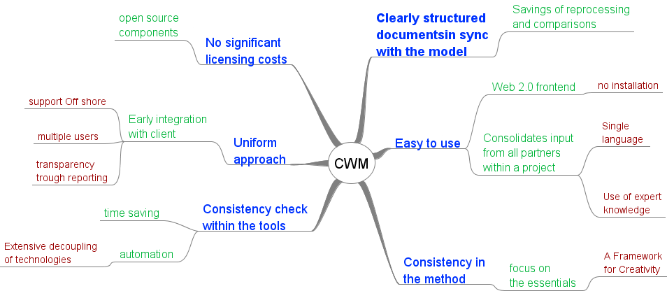

Welcome
to the Chronos Web Modeler 0.9.9.5 Beta Release.
The CWM is a tool for:

The CWM is:
This is a Beta version, for your evaluation only. Not all features are presents and some are not stable. If you encounter any issues, please report them in our bug tracking system. Additional feature requests may be reported using our feature tracking system.